- IMAGE PYRAMID TUTORIAL
- LAPLACIAN PYRAMIDS:
- FUNCTIONS for CONSTRUCTING/MANIPULATING LAPLACIAN PYRAMIDS
- ALIASING in the Gaussian and Laplacian pyramids:
- PROJECTION and BASIS functions:
- QMF/WAVELET PYRAMIDS.
- FUNCTIONS for CONSTRUCTING/MANIPULATING QMF/Wavelet PYRAMIDS
- PERFECT RECONSTRUCTION: HAAR AND DEBAUCHIES WAVELETS
- ALIASING IN WAVELET TRANSFORMS
- The "STEERABLE PYRAMID"
EPS, 6/96.
Based on the original OBVIUS tutorial.
Determine a subsampling factor for images, based on machine speed:
oim = pgmRead('einstein.pgm'); tic; corrDn(oim,[1 1; 1 1]/4,'reflect1',[2 2]); time = toc; imSubSample = min(max(floor(log2(time)/2+3),0),2); im = blurDn(oim, imSubSample,'qmf9'); clear oim; clf; showIm(im, 'auto2', 'auto', 'im');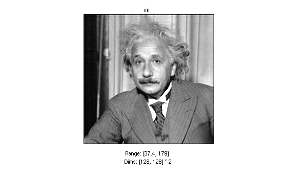
LAPLACIAN PYRAMIDS:
Images may be decomposed into information at different scales. Blurring eliminates the fine scales (detail):binom5 = binomialFilter(5); lo_filt = binom5*binom5'; blurred = rconv2(im,lo_filt); subplot(1,2,1); showIm(im, 'auto2', 'auto', 'im'); subplot(1,2,2); showIm(blurred, 'auto2', 'auto', 'blurred');

Subtracting the blurred image from the original leaves ONLY the fine scale detail:
fine0 = im - blurred; subplot(1,2,1); showIm(fine0, 'auto2', 'auto', 'fine0');

The blurred and fine images contain all the information found in the original image. Trivially, adding the blurred image to the fine scale detail will reconstruct the original. We can compare the original image to the sum of blurred and fine using the "imStats" function, which reports on the statistics of the difference between it's arguments:
imStats(im, blurred+fine0);
Difference statistics: Range: [-7.105427e-15, 3.552714e-15] Mean: -0.000000, Stdev (rmse): 0.000000, SNR (dB): 353.641098Since the filter is a lowpass filter, we might want to subsample the blurred image. This may cause some aliasing (depends on the filter), but the decomposition structure given above will still be possible. The corrDn function correlates (same as convolution, but flipped filter) and downsamples in a single operation (for efficiency). The string 'reflect1' tells the function to handle boundaries by reflecting the image about the edge pixels. Notice that the blurred1 image is half the size (in each dimension) of the original image.
lo_filt = 2*binom5*binom5'; %construct a separable 2D filter blurred1 = corrDn(im,lo_filt,'reflect1',[2 2]); subplot(1,2,2); showIm(blurred1,'auto2','auto','blurred1');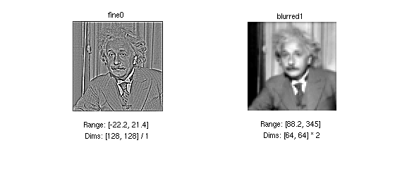
Now, to extract fine scale detail, we must interpolate the image back up to full size before subtracting it from the original. The upConv function does upsampling (padding with zeros between samples) followed by convolution. This can be done using the lowpass filter that was applied before subsampling or it can be done with a different filter.
fine1 = im - upConv(blurred1,lo_filt,'reflect1',[2 2],[1 1],size(im)); subplot(1,2,1); showIm(fine1,'auto2','auto','fine1');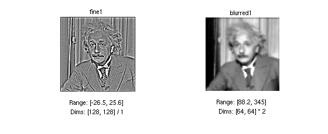
We now have a technique that takes an image, computes two new images (blurred1 and fine1) containing the coarse scale information and the fine scale information. We can also (trivially) reconstruct the original from these two (even if the subsampling of the blurred1 image caused aliasing):
recon = fine1 + upConv(blurred1,lo_filt,'reflect1',[2 2],[1 1],size(im));
imStats(im, recon);
Difference statistics: Range: [-7.105427e-15, 7.105427e-15] Mean: -0.000000, Stdev (rmse): 0.000000, SNR (dB): 345.757412Thus, we have described an INVERTIBLE linear transform that maps an input image to the two images blurred1 and fine1. The inverse transformation maps blurred1 and fine1 to the result. This is depicted graphically with a system diagram:
IM --> blur/down2 ---------> BLURRED1 --> up2/blur --> add --> RECON | | ^ | | | | V | | up2/blur | | | | | | | | V | --------------> subtract --> FINE1 -------------------Note that the number of samples in the representation (i.e., total samples in BLURRED1 and FINE1) is 1.5 times the number of samples in the original IM. Thus, this representation is OVERCOMPLETE. Often, we will want further subdivisions of scale. We can decompose the (coarse-scale) BLURRED1 image into medium coarse and very coarse images by applying the same splitting technique:
blurred2 = corrDn(blurred1,lo_filt,'reflect1',[2 2]);
showIm(blurred2)
ans = 152.6425 710.8401

fine2 = blurred1 - upConv(blurred2,lo_filt,'reflect1',[2 2],[1 1],size(blurred1));
showIm(fine2)
ans = -107.9813 151.5816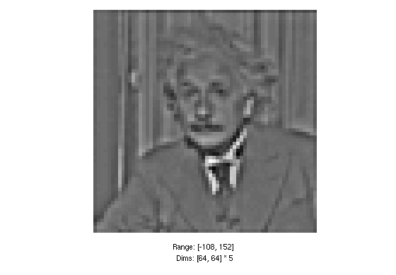
Since blurred2 and fine2 can be used to reconstruct blurred1, and blurred1 and fine1 can be used to reconstruct the original image, the set of THREE images (also known as "subbands") {blurred2, fine2, fine1} constitute a complete representation of the original image. Note that the three subbands are displayed at the same size, but they are actually three different sizes.
subplot(1,3,1); showIm(fine1,'auto2',2^(imSubSample-1),'fine1'); subplot(1,3,2); showIm(fine2,'auto2',2^(imSubSample),'fine2'); subplot(1,3,3); showIm(blurred2,'auto2',2^(imSubSample+1),'blurred2');

It is useful to consider exactly what information is stored in each of the pyramid subbands. The reconstruction process involves recursively interpolating these images and then adding them to the image at the next finer scale. To see the contribution of ONE of the representation images (say blurred2) to the reconstruction, we imagine filling all the other subbands with zeros and then following our reconstruction procedure. For the blurred2 subband, this is equivalent to simply calling upConv twice:
blurred2_full = upConv(upConv(blurred2,lo_filt,'reflect1',[2 2],[1 1],size(blurred1)),... lo_filt,'reflect1',[2 2],[1 1],size(im)); subplot(1,3,3); showIm(blurred2_full,'auto2',2^(imSubSample-1),'blurred2-full');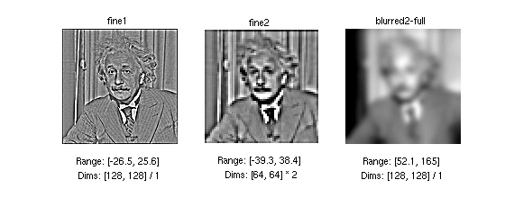
For the fine2 subband, this is equivalent to calling upConv once:
fine2_full = upConv(fine2,lo_filt,'reflect1',[2 2],[1 1],size(im)); subplot(1,3,2); showIm(fine2_full,'auto2',2^(imSubSample-1),'fine2-full');

If we did everything correctly, we should be able to add together these three full-size images to reconstruct the original image:
recon = blurred2_full + fine2_full + fine1; imStats(im, recon)
Difference statistics: Range: [-8.526513e-14, 5.684342e-14] Mean: -0.000000, Stdev (rmse): 0.000000, SNR (dB): 307.603254
FUNCTIONS for CONSTRUCTING/MANIPULATING LAPLACIAN PYRAMIDS
We can continue this process, recursively splitting off finer and finer details from the blurred image (like peeling off the outer layers of an onion). The resulting data structure is known as a "Laplacian Pyramid". To make things easier, we have written a MatLab function called buildLpyr to construct this object. The function returns two items: a long vector containing the subbands of the pyramid, and an index matrix that is used to access these subbands. The display routine showLpyr shows all the subbands of the pyramid, at the their correct relative sizes. It should now be clearer why these data structures are called "pyramids".[pyr,pind] = buildLpyr(im,5-imSubSample); showLpyr(pyr,pind);

There are also "accessor" functions for pulling out a single subband:
showIm(pyrBand(pyr,pind,2));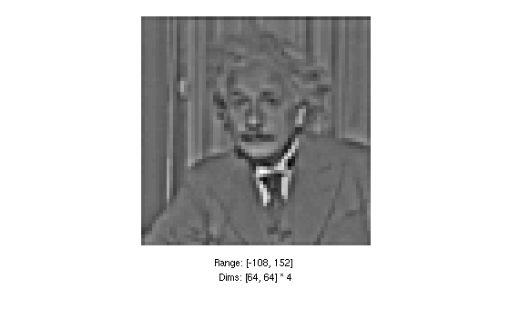
The reconLpyr function allows you to reconstruct from a laplacian pyramid. The third (optional) arg allows you to select any subset of pyramid bands (default is to use ALL of them).
clf; showIm(reconLpyr(pyr,pind,[1 3]),'auto2','auto','bands 1 and 3 only');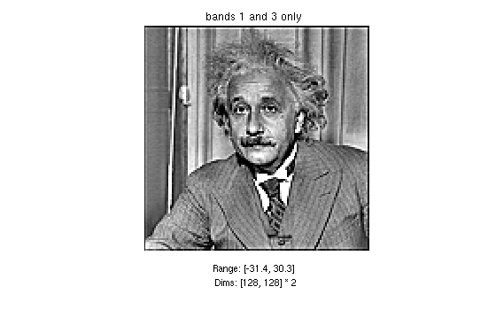
fullres = reconLpyr(pyr,pind); showIm(fullres,'auto2','auto','Full reconstruction'); imStats(im,fullres);
Difference statistics: Range: [-7.105427e-15, 7.105427e-15] Mean: 0.000000, Stdev (rmse): 0.000000, SNR (dB): 345.757510

buildLpyr uses 5-tap filters by default for building Laplacian pyramids. You can specify other filters:
namedFilter('binom3') [pyr3,pind3] = buildLpyr(im,5-imSubSample,'binom3'); showLpyr(pyr3,pind3); fullres3 = reconLpyr(pyr3,pind3,'all','binom3'); imStats(im,fullres3);
ans =
0.3536
0.7071
0.3536
Difference statistics:
Range: [, 7.105427e-15]
Mean: 0.000000, Stdev (rmse): 0.000000, SNR (dB): 350.953606
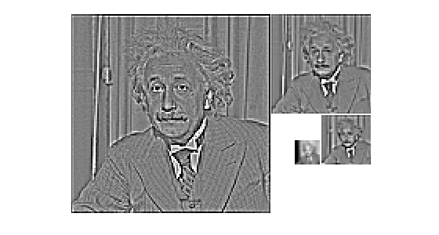
Here we build a "Laplacian" pyramid using random filters. filt1 is used with the downsampling operations and filt2 is used with the upsampling operations. We normalize the filters for display purposes. Of course, these filters are (almost certainly) not very "Gaussian", and the subbands of such a pyramid will be garbage! Nevertheless, it is a simple property of the Laplacian pyramid that we can use ANY filters and we will still be able to reconstruct perfectly.
filt1 = rand(1,5); filt1 = sqrt(2)*filt1/sum(filt1)
filt2 = rand(1,3); filt2 = sqrt(2)*filt2/sum(filt2)
[pyrr,pindr] = buildLpyr(im,5-imSubSample,filt1,filt2);
showLpyr(pyrr,pindr);
fullresr = reconLpyr(pyrr,pindr,'all',filt2);
imStats(im,fullresr);
filt1 =
0.3708 0.2612 0.2453 0.4093 0.1276
filt2 =
0.5662 0.5636 0.2845
Difference statistics:
Range: [-1.421085e-14, 2.842171e-14]
Mean: -0.000000, Stdev (rmse): 0.000000, SNR (dB): 336.260358
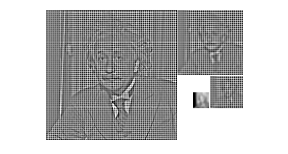
ALIASING in the Gaussian and Laplacian pyramids:
Unless one is careful, the subsampling operations will introduce aliasing artifacts in these pyramid transforms. This is true even though the Laplacian pyramid can be used to reconstruct the original image perfectly. When reconstructing, the pyramid is designed in such a way that these aliasing artifacts cancel out. So it's not a problem if the only thing we want to do is reconstruct. However, it can be a serious problem if we intend to process each of the subbands independently. One way to see the consequences of the aliasing artifacts is byexamining variations that occur when the input is shifted. We choose an image and shift it by some number of pixels. Then blur (filter-downsample-upsample-filter) the original image and blur the shifted image. If there's no aliasing, then the blur and shift operations should commute (i.e., shift-filter-downsample-upsample-filter is the same as filter-downsample-upsample-filter-shift). Try this for 2 different filters (by replacing 'binom3' with 'binom5' or 'binom7' below), and you'll see that the aliasing is much worse for the 3 tap filter.sig = 100*randn([1 16]); sh = [0 7]; %shift amount lev = 2; % level of pyramid to look at flt = 'binom3'; %filter to use: shiftIm = shift(sig,sh); [pyr,pind] = buildLpyr(shiftIm, lev, flt, flt, 'circular'); shiftBlur = reconLpyr(pyr, pind, lev, flt, 'circular'); [pyr,pind] = buildLpyr(sig, lev, flt, flt, 'circular'); res = reconLpyr(pyr, pind, lev, flt, 'circular'); blurShift = shift(res,sh); subplot(2,1,1); r = showIm(shiftBlur,'auto2','auto','shiftBlur'); subplot(2,1,2); showIm(blurShift,r,'auto','blurShift'); imStats(blurShift,shiftBlur);
Difference statistics: Range: [-9.191223e+01, 8.063398e+01] Mean: 0.000000, Stdev (rmse): 46.487369, SNR (dB): -0.344851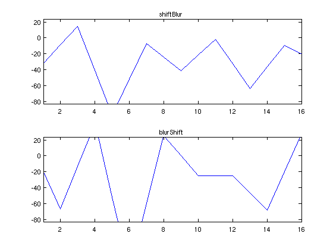
PROJECTION and BASIS functions:
An invertible, linear transform can be characterized in terms of a set of PROJECTION and BASIS functions. In matlab matrix notation:c = P' * x
x = B * c
where x is an input, c are the transform coefficients, P and B are matrices. The columns of P are the projection functions (the input is projected onto the the columns of P to get each successive transform coefficient). The columns of B are the basis functions (x is a linear combination of the columns of B). Since the Laplacian pyramid is a linear transform, we can ask: what are its BASIS functions? We consider these in one dimension for simplicity. The BASIS function corresponding to a given coefficient tells us how much that coefficient contributes to each pixel in the reconstructed image. We can construct a single basis function by setting one sample of one subband equal to 1.0 (and all others to zero) and reconstructing. To build the entire matrix, we have to do this for every sample of every subband:
sz = min(round(48/(sqrt(2)^imSubSample)),36); sig = zeros(sz,1); [pyr,pind] = buildLpyr(sig); basis = zeros(sz,size(pyr,1)); for n=1:size(pyr,1) pyr = zeros(size(pyr)); pyr(n) = 1; basis(:,n) = reconLpyr(pyr,pind); end clf; showIm(basis)
ans =
0 1
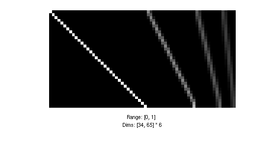The columns of the basis matrix are the basis functions. The matrix is short and fat, corresponding to the fact that the representation is OVERCOMPLETE. Below, we plot the middle one from each subband, starting with the finest scale. Note that all of these basis functions are lowpass (Gaussian-like) functions.
locations = round(sz * (2 - 3./2.^[1:max(4,size(pind,1))]))+1; for lev=1:size(locations,2) subplot(2,2,lev); showIm(basis(:,locations(lev))); axis([0 sz 0 1.1]); end

Now, we'd also like see the inverse (we'll call them PROJECTION) functions. We need to ask how much of each sample of the input image contributes to a given pyramid coefficient. Thus, the matrix is constructed by building pyramids on the set of images with impulses at each possible location. The rows of this matrix are the projection functions.
projection = zeros(size(pyr,1),sz); for pos=1:sz [pyr,pind] = buildLpyr(mkImpulse([1 sz], [1 pos])); projection(:,pos) = pyr; end clf; showIm(projection);

Building a pyramid corresponds to multiplication by the projection matrix. Reconstructing from this pyramid corresponds to multiplication by the basis matrix. Thus, the product of the two matrices (in this order) should be the identity matrix:
showIm(basis*projection);

We can plot a few example projection functions at different scales. Note that all of the projection functions are bandpass functions, except for the coarsest subband which is lowpass.
for lev=1:size(locations,2) subplot(2,2,lev); showIm(projection(locations(lev),:)); axis([0 sz -0.3 0.8]); end

Now consider the frequency response of these functions, plotted over the range [-pi,pi]:
for lev=1:size(locations,2) subplot(2,2,lev); proj = projection(locations(lev),:); plot(pi*[-32:31]/32,fftshift(abs(fft(proj',64)))); axis([-pi pi -0.1 3]); end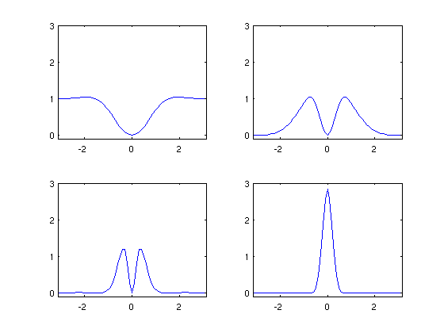
The first projection function is highpass, and the second is bandpass. Both of these look something like the Laplacian (2nd derivative) of a Gaussian. The last is lowpass, as are the basis functions. Thus, the basic operation used to create each level of the pyramid involves a simple highpass/lowpass split.
QMF/WAVELET PYRAMIDS.
Two things about Laplacian pyramids are a bit unsatisfactory.First, there are more pixels (coefficients) in the representation than in the original image. Specifically, the 1-dimensional transform is overcomplete by a factor of 4/3, and the 2-dimensional transform is overcomplete by a factor of 2. Secondly, the"bandpass" images (fineN) do not segregate information according toorientation.There are other varieties of pyramid. One type that arose in the speech coding community is based on a particular pairs of filters known as a "Quadrature Mirror Filters" or QMFs. These are closely related to Wavelets (essentially, they are approximate wavelet filters).
Recall that the Laplacian pyramid is formed by simple hi/low splitting at each level. The lowpass band is subsampled by a factor of 2, but the highpass band is NOT subsampled. In the QMF pyramid, we apply two filters (hi- and lo- pass) and subsample BOTH by a factor of 2, thus eliminating the excess coefficients of the Laplacian pyramid.
The two filters must have a specific relationship to each other. In particular, let n be an index for the filter samples. The highpass filter may be constructed from the lowpass filter by (1) modulating (multiplying) by (-1)^n (equivalent to shifting by pi in the Fourier domain), (2) flipping (i.e., reversing the order of the taps), (3) spatially shifting by one sample. Try to convince yourself that the resulting filters will always be orthogonal to each other (i.e., their inner products will be zero) when shifted by any multiple of two.
The function modulateFlip performs the first two of these operations. The third (spatial shifting) step is built into the convolution code.
flo = namedFilter('qmf9')'; fhi = modulateFlip(flo)'; subplot(2,1,1); lplot(flo); axis([0 10 -0.5 1.0]); title('lowpass'); subplot(2,1,2); lplot(fhi); axis([0 10 -0.5 1.0]); title('highpass');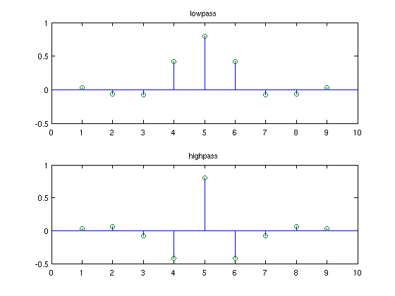
In the Fourier domain, these filters are (approximately) "power-complementary": the sum of their squared power spectra is (approximately) a constant. But note that neither is a perfect bandlimiter (i.e., a sinc function), and thus subsampling by a factor of 2 will cause aliasing in each of the subbands. See below for a discussion of the effect of this aliasing. Plot the two frequency responses:
freq = pi*[-32:31]/32; subplot(2,1,1); plot(freq,fftshift(abs(fft(flo,64))),'--',freq,fftshift(abs(fft(fhi,64))),'-'); axis([-pi pi 0 1.5]); title('FFT magnitudes'); subplot(2,1,2); plot(freq,fftshift(abs(fft(flo,64)).^2)+fftshift(abs(fft(fhi,64)).^2)); axis([-pi pi 0 2.2]); title('Sum of squared magnitudes');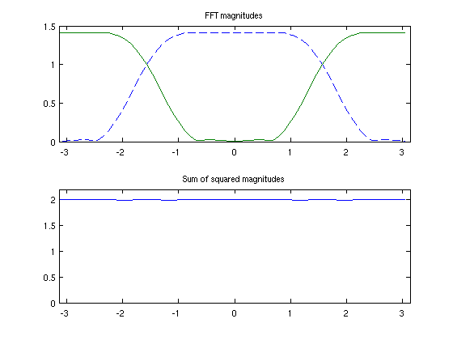
We can split an input signal into two bands as follows:
sig = mkFract([1,64],1.6); subplot(2,1,1); showIm(sig,'auto1','auto','sig'); lo1 = corrDn(sig,flo,'reflect1',[1 2],[1 1]); hi1 = corrDn(sig,fhi,'reflect1',[1 2],[1 2]); subplot(2,1,2); showIm(lo1,'auto1','auto','low and high bands'); hold on; plot(hi1,'--r'); hold off;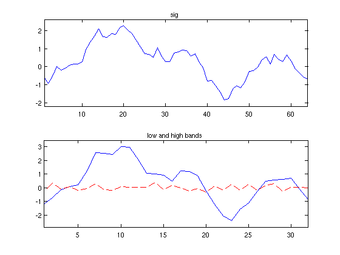
Notice that the two subbands are half the size of the original image, due to the subsampling by a factor of 2. One subtle point: the highpass and lowpass bands are subsampled on different lattices: the lowpass band retains the odd-numbered samples and the highpass band retains the even-numbered samples. This was the 1-sample shift relating the high and lowpass kernels (mentioned above). We've used the 'reflect1' to handle boundaries, which works properly for symmetric odd-length QMFs.
We can reconstruct the original image by interpolating these two subbands USING THE SAME FILTERS:
reconlo = upConv(lo1,flo,'reflect1',[1 2]); reconhi = upConv(hi1,fhi,'reflect1',[1 2],[1 2]); subplot(2,1,2); showIm(reconlo+reconhi,'auto1','auto','reconstructed'); imStats(sig,reconlo+reconhi);
Difference statistics: Range: [-1.832183e-03, 1.369161e-03] Mean: -0.000062, Stdev (rmse): 0.000727, SNR (dB): 62.766134

We have described an INVERTIBLE linear transform that maps an input image to the two images lo1 and hi1. The inverse transformation maps these two images to the result. This is depicted graphically with a system diagram:
IM ---> flo/down2 --> LO1 --> up2/flo --> add --> RECON
| ^
| |
| |
-> fhi/down2 --> HI1 --> up2/fhi -----Note that the number of samples in the representation (i.e., total samples in LO1 and HI1) is equal to the number of samples in the original IM. Thus, this representation is exactly COMPLETE, or "critically sampled".
So we've fixed one of the problems that we had with Laplacian pyramid. But the system diagram above places strong constraints on the filters. In particular, for these filters the reconstruction is no longer perfect. Turns out there are NO perfect-reconstruction symmetric filters that are power-complementary, except for the trivial case [1] and the nearly-trivial case [1 1]/sqrt(2).
Let's consider the projection functions of this 2-band splitting operation. We can construct these by applying the transform to impulse input signals, for all possible impulse locations. The rows of the following matrix are the projection functions for each coefficient in the transform.
M = [corrDn(eye(32),flo','circular',[1 2]), ... corrDn(eye(32),fhi','circular',[1 2],[1 2])]'; clf; showIm(M,'auto1','auto','M');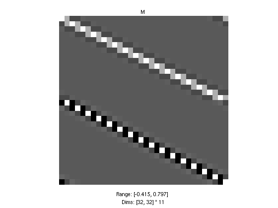
The transform matrix is composed of two sub-matrices. The top half contains the lowpass kernel, shifted by increments of 2 samples. The bottom half contains the highpass. Now we compute the inverse of this matrix:
M_inv = inv(M); showIm(M_inv,'auto1','auto','M_inv');

The inverse is (very close to) the transpose of the original matrix! In other words, the transform is orthonormal.
imStats(M_inv',M);
Difference statistics: Range: [-6.479123e-04, 3.974265e-04] Mean: -0.000004, Stdev (rmse): 0.000263, SNR (dB): 56.495757
This also points out a nice relationship between the corrDn and upConv functions, and the matrix representation. corrDn is equivalent to multiplication by a matrix with copies of the filter on the ROWS, translated in multiples of the downsampling factor. upConv is equivalent to multiplication by a matrix with copies of the filter on the COLUMNS, translated by the upsampling factor. As in the Laplacian pyramid, we can recursively apply this QMF band-splitting operation to the lowpass band:
lo2 = corrDn(lo1,flo,'reflect1',[1 2]); hi2 = corrDn(lo1,fhi,'reflect1',[1 2],[1 2]);
The representation of the original signal is now comprised of the three subbands {hi1, hi2, lo2} (we don't hold onto lo1, because it can be reconstructed from lo2 and hi2). Note that hi1 is at 1/2 resolution, and hi2 and lo2 are at 1/4 resolution: The total number of samples in these three subbands is thus equal to the number of samples in the original signal.
imnames=['hi1'; 'hi2'; 'lo2']; for bnum=1:3 band = eval(imnames(bnum,:)); subplot(3,1,bnum); showIm(band); ylabel(imnames(bnum,:)); axis([1 size(band,2) 1.1*min(lo2) 1.1*max(lo2)]); end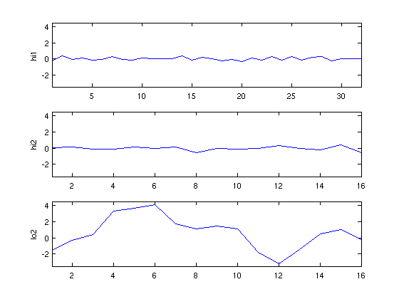
Reconstruction proceeds as with the Laplacian pyramid: combine lo2 and hi2 to reconstruct lo1, which is then combined with hi1 to reconstruct the original signal:
recon_lo1 = upConv(hi2,fhi,'reflect1',[1 2],[1 2]) + ... upConv(lo2,flo,'reflect1',[1 2],[1 1]); reconstructed = upConv(hi1,fhi,'reflect1',[1 2],[1 2]) + ... upConv(recon_lo1,flo,'reflect1',[1 2],[1 1]); imStats(sig,reconstructed);
Difference statistics: Range: [-2.857375e-03, 1.844433e-03] Mean: -0.000097, Stdev (rmse): 0.001304, SNR (dB): 57.694286
FUNCTIONS for CONSTRUCTING/MANIPULATING QMF/Wavelet PYRAMIDS
To make things easier, we have bundled these qmf operations and data structures into an object in MATLAB.sig = mkFract([1 64], 1.5); [pyr,pind] = buildWpyr(sig); showWpyr(pyr,pind);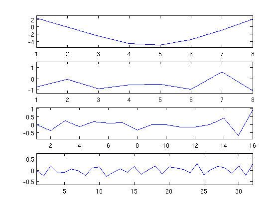
nbands = size(pind,1); for b = 1:nbands subplot(nbands,1,b); lplot(pyrBand(pyr,pind,b)); end res = reconWpyr(pyr,pind); imStats(sig,res);
Difference statistics: Range: [-4.206845e-03, 3.766628e-03] Mean: -0.000445, Stdev (rmse): 0.001764, SNR (dB): 55.072026

Now for 2D, we use separable filters. There are 4 ways to apply the two filters to the input image (followed by the relavent subsampling operation):
(1) lowpass in both x and y
(2) lowpass in x and highpass in y
(3) lowpass in y and highpass in x
(4) highpass in both x and y.
The pyramid is built by recursively subdividing the first of these bands into four new subbands.
First, we'll take a look at some of the basis functions.
sz = 40; zim = zeros(sz); flo = 'qmf9'; edges = 'reflect1'; [pyr,pind] = buildWpyr(zim); % Put an impulse into the middle of each band: for lev=1:size(pind,1) mid = sum(prod(pind(1:lev-1,:)')); mid = mid + floor(pind(lev,2)/2)*pind(lev,1) + floor(pind(lev,1)/2) + 1; pyr(mid,1) = 1; end % And take a look at the reconstruction of each band: for lnum=1:wpyrHt(pind)+1 for bnum=1:3 subplot(wpyrHt(pind)+1,3,(wpyrHt(pind)+1-lnum)*3+bnum); showIm(reconWpyr(pyr, pind, flo, edges, lnum, bnum),'auto1',2,0); end end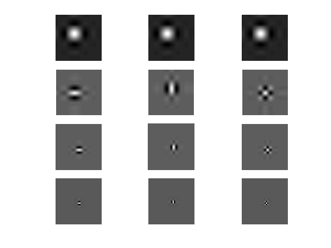
Note that the first column contains horizontally oriented basis functions at different scales. The second contains vertically oriented basis functions. The third contains both diagonals (a checkerboard pattern). The bottom row shows (3 identical images of) a lowpass basis function. Now look at the corresponding Fourier transform magnitudes (these are plotted over the frequency range [-pi, pi] ):
nextFig(2,1); freq = 2 * pi * [-sz/2:(sz/2-1)]/sz; for lnum=1:wpyrHt(pind)+1 for bnum=1:3 subplot(wpyrHt(pind)+1,3,(wpyrHt(pind)+1-lnum)*3+bnum); basisFn = reconWpyr(pyr, pind, flo, edges, lnum, bnum); basisFmag = fftshift(abs(fft2(basisFn,sz,sz))); imagesc(freq,freq,basisFmag); axis('square'); axis('xy'); colormap('gray'); end end nextFig(2,-1);

The filters at a given scale sum to a squarish annular region:
sumSpectra = zeros(sz); lnum = 2; for bnum=1:3 basisFn = reconWpyr(pyr, pind, flo, edges, lnum, bnum); basisFmag = fftshift(abs(fft2(basisFn,sz,sz))); sumSpectra = basisFmag.^2 + sumSpectra; end clf; imagesc(freq,freq,sumSpectra); axis('square'); axis('xy'); title('one scale');

Now decompose an image:
[pyr,pind] = buildWpyr(im);
View all of the subbands (except lowpass), scaled to be the same size (requires a big figure window):
scrsz = get(0,'ScreenSize'); figure('Position',[1 scrsz(4)/2 scrsz(3)/2 scrsz(4)/2]) nlevs = wpyrHt(pind); for lnum=1:nlevs for bnum=1:3 subplot(nlevs,3,(lnum-1)*3+bnum); showIm(wpyrBand(pyr,pind,lnum,bnum), 'auto2', 2^(lnum+imSubSample-2)); end end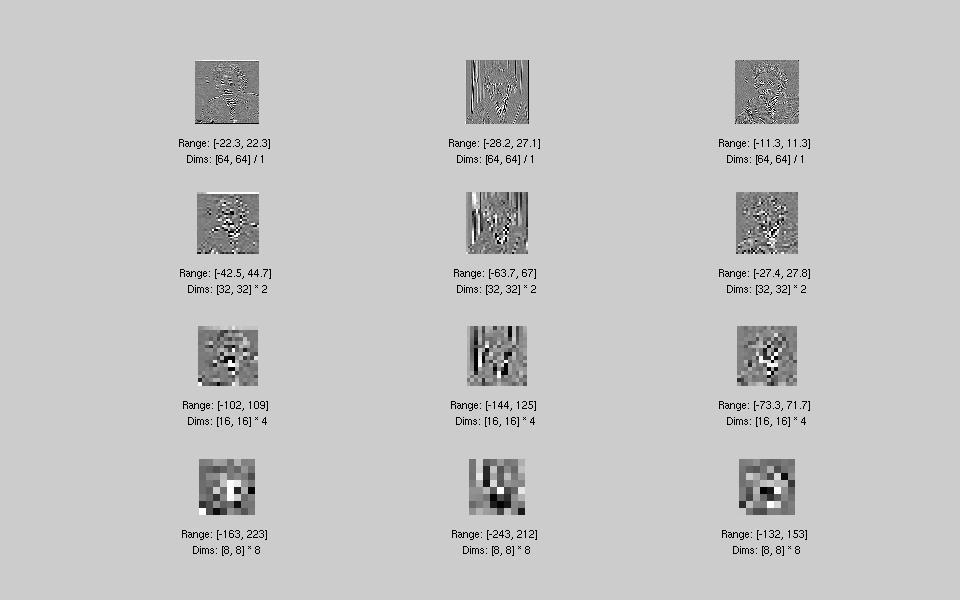
In addition to the bands shown above, there's a lowpass residual:
nextFig(2,1); clf; showIm(pyrLow(pyr,pind)); nextFig(2,-1);

% Alternatively, display the pyramid with the subbands shown at their % correct relative sizes: clf; showWpyr(pyr, pind);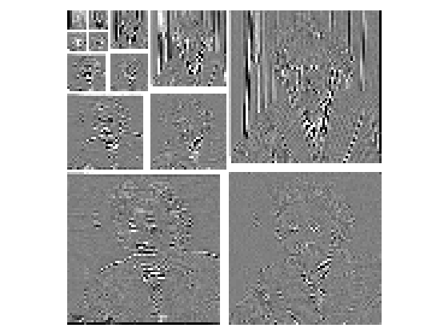
The reconWpyr function can be used to reconstruct the entire pyramid:
reconstructed = reconWpyr(pyr,pind); imStats(im,reconstructed);
Difference statistics: Range: [-4.394200e-01, 3.481599e-01] Mean: -0.144226, Stdev (rmse): 0.071076, SNR (dB): 53.924849
As with Laplacian pyramids, you can specify sub-levels and subbands to be included in the reconstruction. For example:
clf showIm(reconWpyr(pyr,pind,'qmf9','reflect1',[1:wpyrHt(pind)],[1])); %Horizontal only

showIm(reconWpyr(pyr,pind,'qmf9','reflect1',[2,3])); %two middle scales

PERFECT RECONSTRUCTION: HAAR AND DEBAUCHIES WAVELETS
The symmetric QMF filters used above are not perfectly orthogonal. In fact, it's impossible to construct a symmetric filter of size greater than 2 that is perfectly orthogonal to shifted copies (shifted by multiples of 2) of itself. For example, consider a symmetric kernel of length 3. Shift by two and the right end of the original kernel is aligned with the left end of the shifted one. Thus, the inner product of these two will be the square of the end tap, which will be non-zero.However, one can easily create wavelet filters of length 2 that will do the job. This is the oldest known wavelet, known as the "Haar". The two kernels are [1,1]/sqrt(2) and [1,-1]/sqrt(2). These are trivially seen to be orthogonal to each other, and shifts by multiples of two are also trivially orthogonal. The projection functions of the Haar transform are in the rows of the following matrix, constructed by applying the transform to impulse input signals, for all possible impulse locations:
haarLo = namedFilter('haar') haarHi = modulateFlip(haarLo) subplot(2,1,1); lplot(haarLo); axis([0 3 -1 1]); title('lowpass'); subplot(2,1,2); lplot(haarHi); axis([0 3 -1 1]); title('highpass');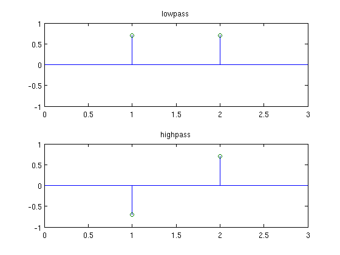
haarLo =
0.7071
0.7071
haarHi =
-0.7071
0.7071
M = [corrDn(eye(32), haarLo, 'reflect1', [2 1], [2 1]); ... corrDn(eye(32), haarHi, 'reflect1', [2 1], [2 1])]; clf; showIm(M)
ans = -0.7071 0.7071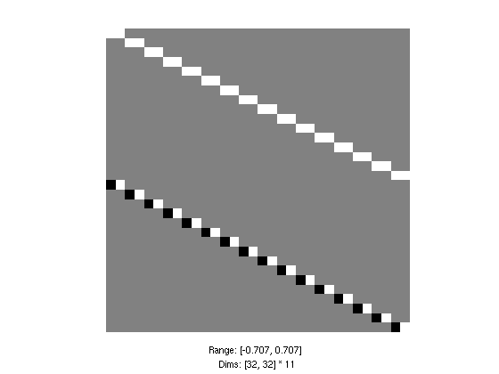
showIm(M*M') %identity!
ans =
0 1.0000

As before, the filters are power-complementary (although the frequency isolation is rather poor, and thus the subbands will be heavily aliased):
plot(pi*[-32:31]/32,abs(fft(haarLo,64)).^2,'--',... pi*[-32:31]/32,abs(fft(haarHi,64)).^2,'-');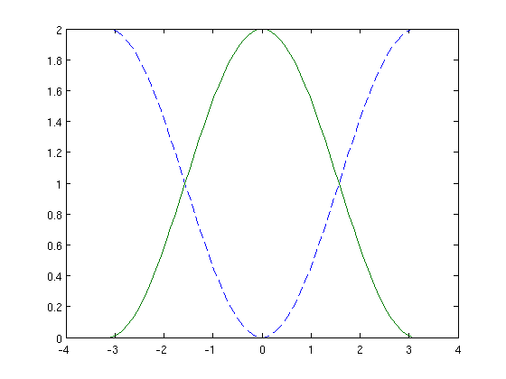
sig = mkFract([1,64],0.5); [pyr,pind] = buildWpyr(sig,4,'haar','reflect1'); showWpyr(pyr,pind);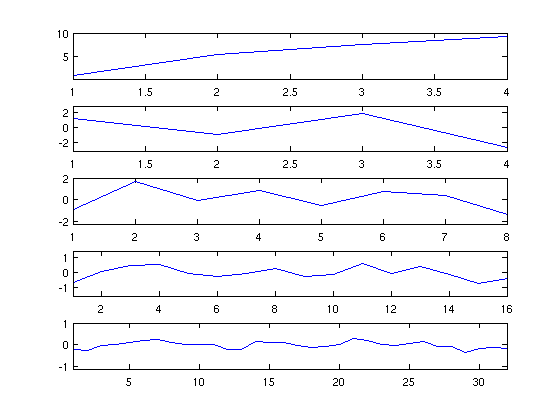
check perfect reconstruction:
res = reconWpyr(pyr,pind, 'haar', 'reflect1'); imStats(sig,res)
Difference statistics: Range: [-2.775558e-16, 3.552714e-15] Mean: 0.000000, Stdev (rmse): 0.000000, SNR (dB): 300.614315
If you want perfect reconstruction, but don't like the Haar transform, there's another option: drop the symmetry requirement. Ingrid Daubechies developed one of the earliest sets of such perfect-reconstruction wavelets. The simplest of these is of length 4:
daub_lo = namedFilter('daub2');
daub_hi = modulateFlip(daub_lo);
The daub_lo filter is constructed to be orthogonal to 2shifted copy of itself. For example:
[daub_lo;0;0]'*[0;0;daub_lo]
ans = 2.9092e-13
M = [corrDn(eye(32), daub_lo, 'circular', [2 1], [2 1]); ... corrDn(eye(32), daub_hi, 'circular', [2 1], [2 1])]; clf; showIm(M)
ans = -0.4830 0.8365

showIm(M*M') % identity!
ans =
0 1.0000

Again, they're power complementary:
plot(pi*[-32:31]/32,abs(fft(daub_lo,64)).^2,'--',... pi*[-32:31]/32,abs(fft(daub_hi,64)).^2,'-');

The sum of the power spectra is again flat
plot(pi*[-32:31]/32,...
fftshift(abs(fft(daub_lo,64)).^2)+fftshift(abs(fft(daub_hi,64)).^2));

Make a pyramid using the same code as before (except that we can't use reflected boundaries with asymmetric filters):
[pyr,pind] = buildWpyr(sig, maxPyrHt(size(sig),size(daub_lo)), daub_lo, 'circular'); showWpyr(pyr,pind,'indep1'); res = reconWpyr(pyr,pind, daub_lo,'circular'); imStats(sig,res);
Difference statistics: Range: [-1.573097e-11, -2.440159e-12] Mean: -0.000000, Stdev (rmse): 0.000000, SNR (dB): 228.416414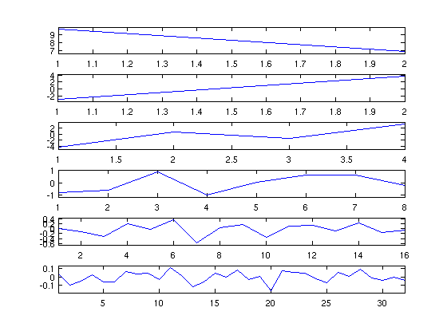
ALIASING IN WAVELET TRANSFORMS
All of these orthonormal pyramid/wavelet transforms have a lot of aliasing in the subbands. You can see that in the frequency response plots since the frequency response of each filter covers well more than half the frequency domain. The aliasing can have serious consequences...Get one of the basis functions of the 2D Daubechies wavelet transform:
[pyr,pind] = buildWpyr(zeros(1,64),4,daub_lo,'circular'); lev = 3; pyr(1+sum(pind(1:lev-1,2))+pind(lev,2)/2,1) = 1; sig = reconWpyr(pyr,pind, daub_lo,'circular'); clf; lplot(sig)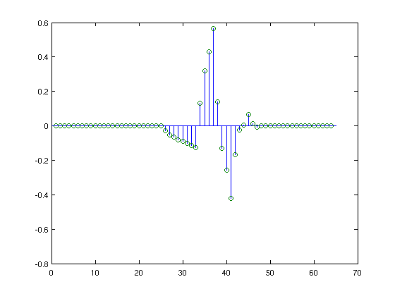
Since the basis functions are orthonormal, building a pyramid using this input will yield a single non-zero coefficient.
[pyr,pind] = buildWpyr(sig, 4, daub_lo, 'circular'); figure(1); nbands = size(pind,1) for b=1:nbands subplot(nbands,1,b); lplot(pyrBand(pyr,pind,b)); axis([1 size(pyrBand(pyr,pind,b),2) -0.3 1.3]); end
nbands =
5
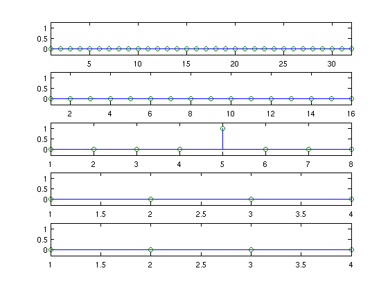Now shift the input by one sample and re-build the pyramid.
shifted_sig = [0,sig(1:size(sig,2)-1)];
[spyr,spind] = buildWpyr(shifted_sig, 4, daub_lo, 'circular');
Plot each band of the unshifted and shifted decomposition
nextFig(2); nbands = size(spind,1) for b=1:nbands subplot(nbands,1,b); lplot(pyrBand(spyr,spind,b)); axis([1 size(pyrBand(spyr,spind,b),2) -0.3 1.3]); end nextFig(2,-1);
nbands =
5
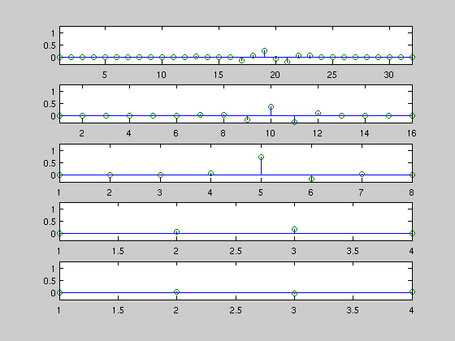
In the third band, we expected the coefficients to move around because the signal was shifted. But notice that in the original signal decomposition, the other bands were filled with zeros. After the shift, they have significant content. Although these subbands are supposed to represent information at different scales, their content also depends on the relative POSITION of the input signal.
This problem is not unique to the Daubechies transform. The same is true for the QMF transform. Try it... In fact, the same kind of problem occurs for almost any orthogonal pyramid transform (the only exception is the limiting case in which the filter is a sinc function).
Orthogonal pyramid transforms are not shift-invariant. Although orthogonality may be an important property for some applications (e.g., data compression), orthogonal pyramid transforms are generally not so good for image analysis.
The overcompleteness of the Laplacian pyramid turns out to be a good thing in the end. By using an overcomplete representation (and by choosing the filters properly to avoid aliasing as much as possible), you end up with a representation that is useful for image analysis.
The "STEERABLE PYRAMID"
The steerable pyramid is a multi-scale representation that istranslation-invariant, but that also includes representation of orientation. Furthermore, the representation of orientation is designed to be rotation-invariant. The basis/projection functions are oriented (steerable) filters, localized in space and frequency. It is overcomplete to avoid aliasing. And it is "self-inverting" (like the QMF/Wavelet transform): the projection functions and basis functions are identical. The mathematical phrase for a transform obeying this property is "tight frame".The system diagram for the steerable pyramid (described in the reference given below) is as follows:
IM ---> fhi0 -----------------> H0 ---------------- fhi0 ---> RESULT
| |
| |
|-> flo0 ---> fl1/down2 --> L1 --> up2/fl1 ---> flo0 -|
| |
|----> fb0 -----> B0 ----> fb0 ---|
| |
|----> fb1 -----> B1 ----> fb1 ---|
. .
. .
|----> fbK -----> BK ----> fbK ---|
The filters {fhi0,flo0} are used to initially split the image into a highpass residual band H0 and a lowpass subband. This lowpass band is then split into a low(er)pass band L1 and K+1 oriented subbands {B0,B1,...,BK}. The representatation is substantially overcomplete. The pyramid is built by recursively splitting the lowpass band (L1) using the inner portion of the diagram (i.e., using the filters {fl1,fb0,fb1,...,fbK}). The resulting transform is overcomplete by a factor of 4k/3.
The scale tuning of the filters is constrained by the recursive system diagram. The orientation tuning is constrained by requiring the property of steerability. A set of filters form a steerable basis if they 1) are rotated copies of each other, and 2) a copy of the filter at any orientation may be computed as a linear combination of the basis filters. The simplest examples of steerable filters is a set of N+1 Nth-order directional derivatives.
Choose a filter set (options are 'sp0Filters', 'sp1Filters', 'sp3Filters', 'sp5Filters'):
filts = 'sp3Filters';
[lo0filt,hi0filt,lofilt,bfilts,steermtx,harmonics] = eval(filts);
fsz = round(sqrt(size(bfilts,1))); fsz = [fsz fsz];
nfilts = size(bfilts,2);
nrows = floor(sqrt(nfilts));
Look at the oriented bandpass filters:
figure for f = 1:nfilts subplot(nrows,ceil(nfilts/nrows),f); showIm(conv2(reshape(bfilts(:,f),fsz),lo0filt)); end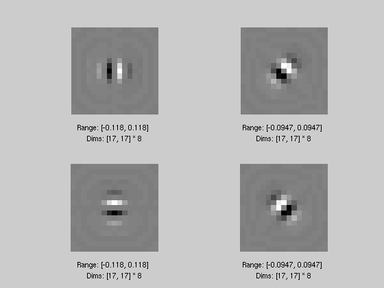
Try "steering" to a new orientation (new_ori in degrees):
new_ori = 360*rand(1) clf; showIm(conv2(reshape(steer(bfilts, new_ori*pi/180 ), fsz), lo0filt));
new_ori = 204.4158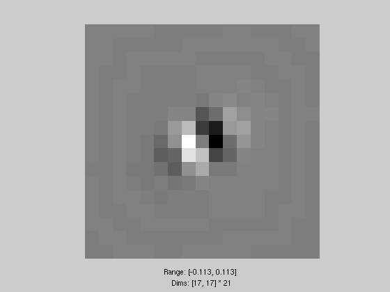
Look at Fourier transform magnitudes:
lo0 = fftshift(abs(fft2(lo0filt,64,64))); fsum = zeros(size(lo0)); figure for f = 1:size(bfilts,2) subplot(nrows,ceil(nfilts/nrows),f); flt = reshape(bfilts(:,f),fsz); freq = lo0 .* fftshift(abs(fft2(flt,64,64))); fsum = fsum + freq.^2; showIm(freq); end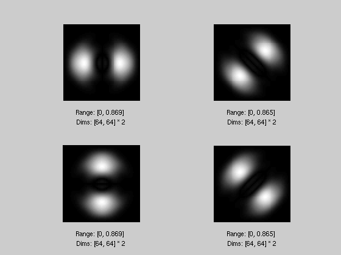
The filters sum to a smooth annular ring:
clf; showIm(fsum);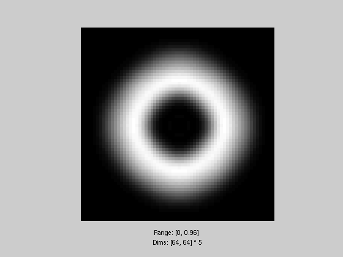
build a Steerable pyramid:
[pyr,pind] = buildSpyr(im, 4-imSubSample, filts);
Look at first (vertical) bands, different scales:
for s = 1:min(4,spyrHt(pind)) band = spyrBand(pyr,pind,s,1); subplot(2,2,s); showIm(band); end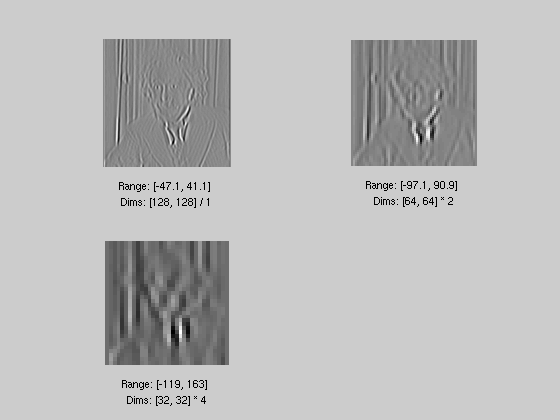
look at all orientation bands at one level (scale):
for b = 1:spyrNumBands(pind) band = spyrBand(pyr,pind,1,b); subplot(nrows,ceil(nfilts/nrows),b); showIm(band); end

To access the high-pass and low-pass bands:
low = pyrLow(pyr,pind); showIm(low);

high = spyrHigh(pyr,pind); showIm(high);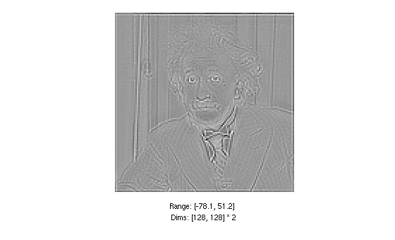
Display the whole pyramid (except for the highpass residual band), with images shown at proper relative sizes:
showSpyr(pyr,pind);

Spin a level of the pyramid, interpolating (steering to) intermediate orienations:
[lev,lind] = spyrLev(pyr,pind,2); lev2 = reshape(lev,prod(lind(1,:)),size(bfilts,2)); figure(1); subplot(1,1,1); showIm(spyrBand(pyr,pind,2,1)); M = moviein(16); for frame = 1:16 steered_im = steer(lev2, 2*pi*(frame-1)/16, harmonics, steermtx); showIm(reshape(steered_im, lind(1,:)),'auto2'); M(:,frame) = getframe; end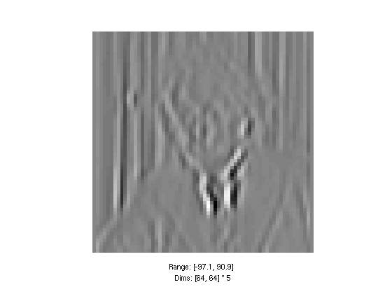
 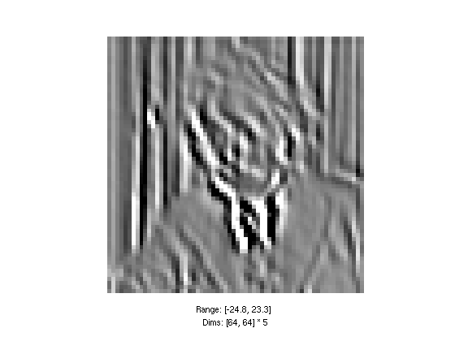
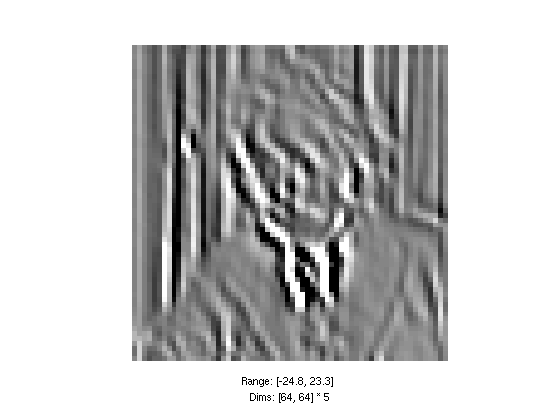  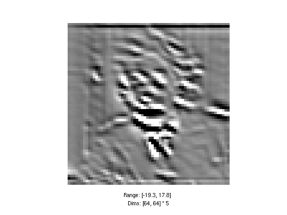 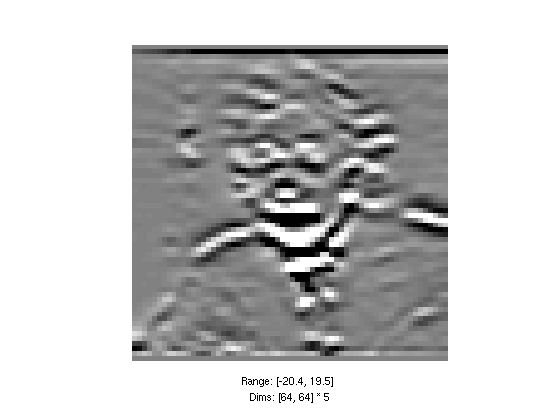
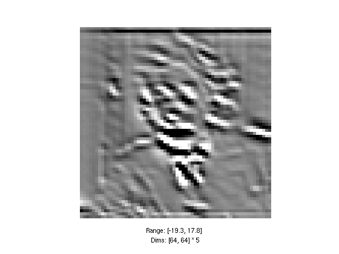 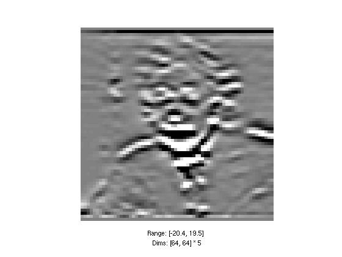  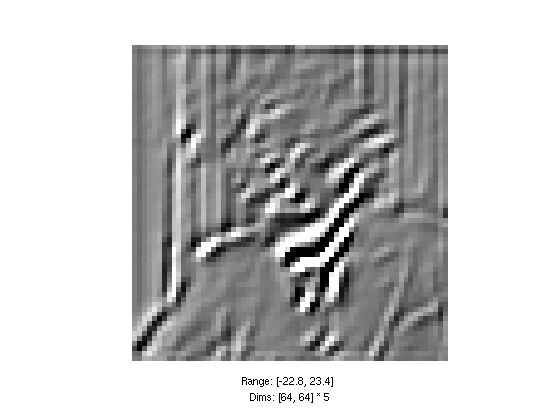 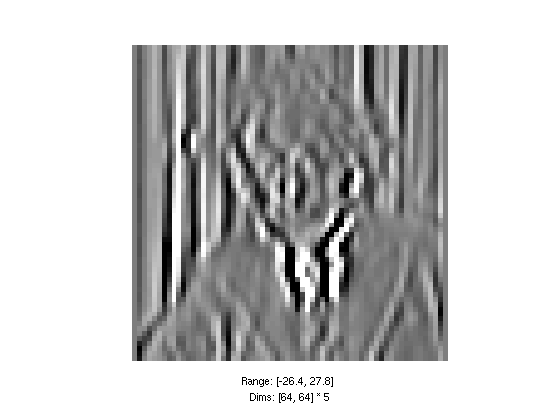
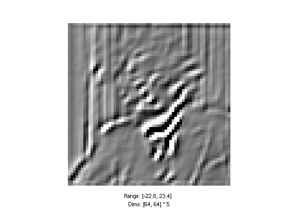 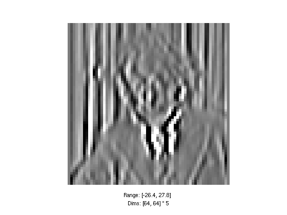  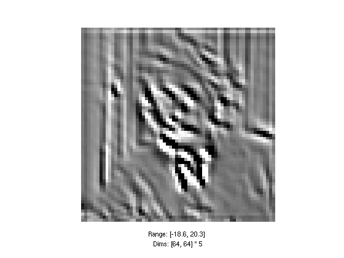 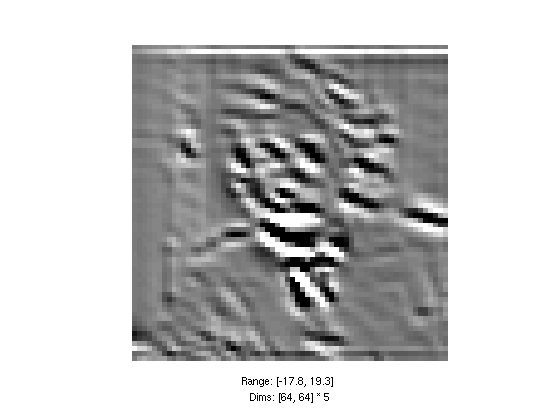
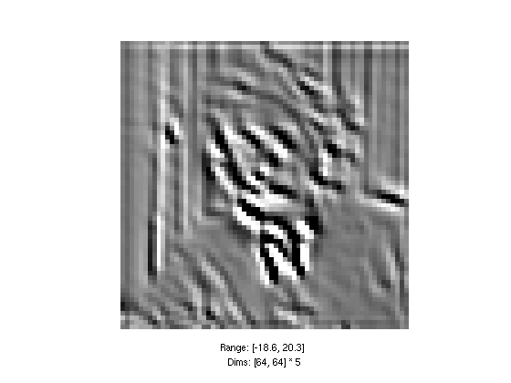 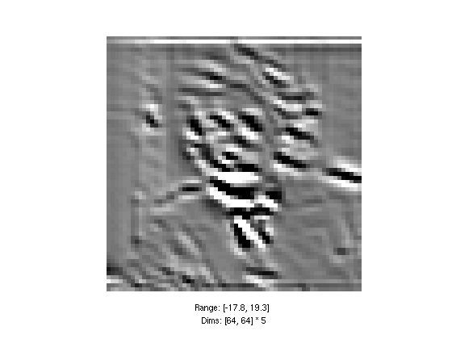  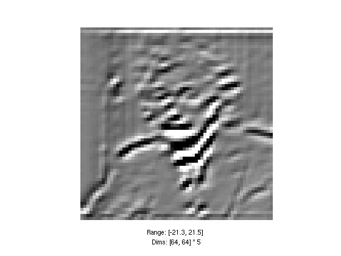 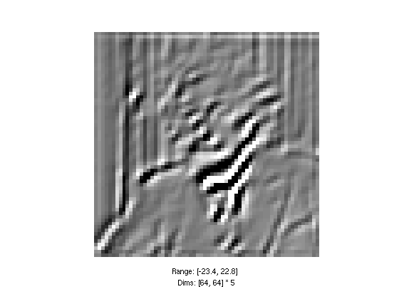
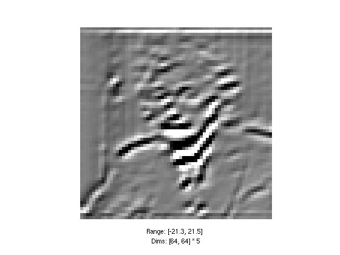 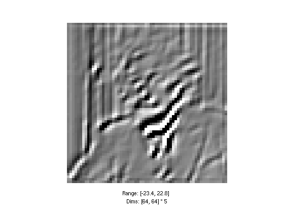 
Reconstruct. Note that the filters are not perfect, although they are good enough for most applications.
res = reconSpyr(pyr, pind, filts); showIm(im + i * res); imStats(im,res);
Difference statistics: Range: [-8.829810e+01, 1.084642e+02] Mean: -0.611088, Stdev (rmse): 13.451002, SNR (dB): 8.384218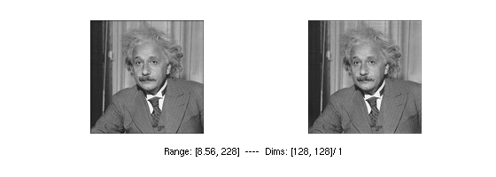
As with previous pyramids, you can select subsets of the levels and orientation bands to be included in the reconstruction.
For example: All levels (including highpass and lowpass residuals), one orientation:
clf; showIm(reconSpyr(pyr,pind,filts,'reflect1','all', [1]));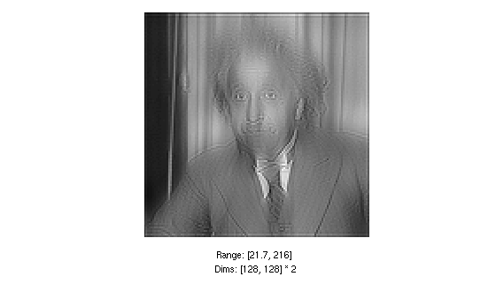
Without the highpass and lowpass:
clf; showIm(reconSpyr(pyr,pind,filts,'reflect1',[1:spyrHt(pind)], [1]));
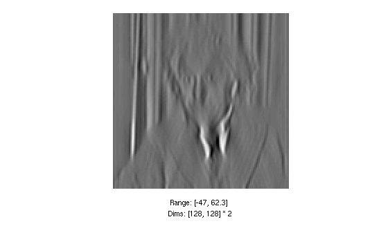
We also provide an implementation of the Steerable pyramid in the Frequency domain. The advantages are perfect-reconstruction (within floating-point error), and any number of orientation bands. The disadvantages are that it is typically slower, and the boundary handling is always circular.
[pyr,pind] = buildSFpyr(im,4,4); % 4 levels, 5 orientation bands showSpyr(pyr,pind); res = reconSFpyr(pyr,pind); imStats(im,res); % nearly perfect
Difference statistics: Range: [-9.705222e-04, 1.297531e-03] Mean: -0.000000, Stdev (rmse): 0.000256, SNR (dB): 102.810403

The steerable pyramid transform given above is described in:
E P Simoncelli and W T Freeman.
The Steerable Pyramid: A Flexible Architecture for Multi-Scale Derivative Computation.
IEEE Second Int'l Conf on Image Processing. Washington DC, October 1995.
Online access:
Abstract
Full (PDF)